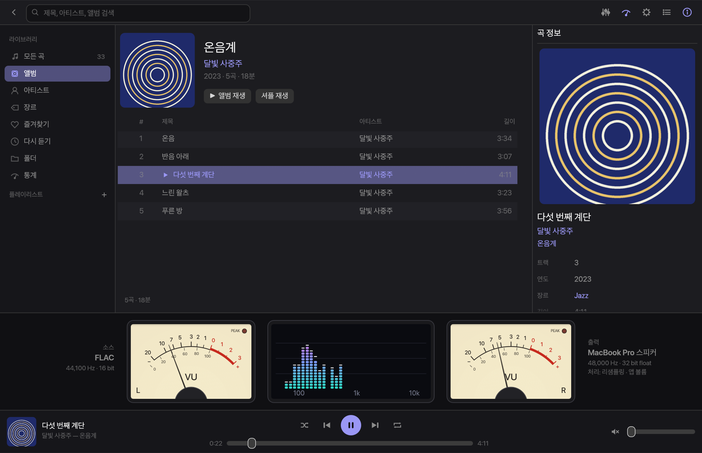
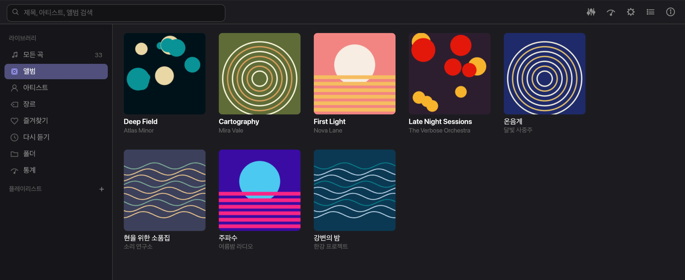
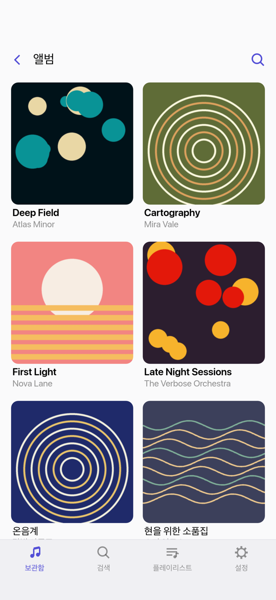
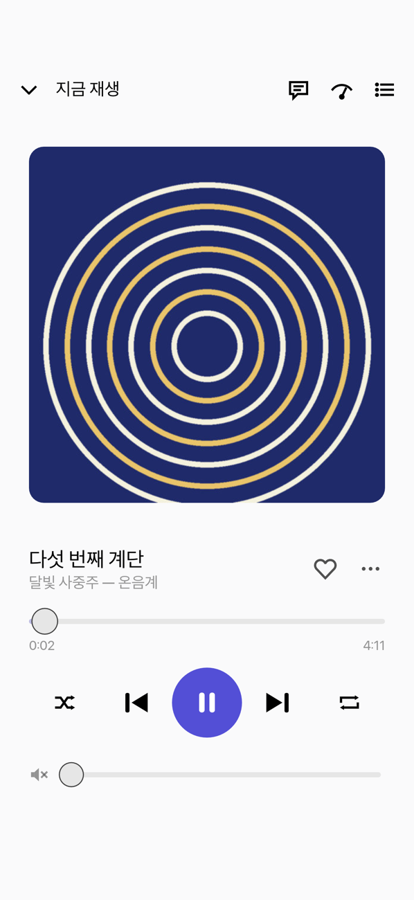
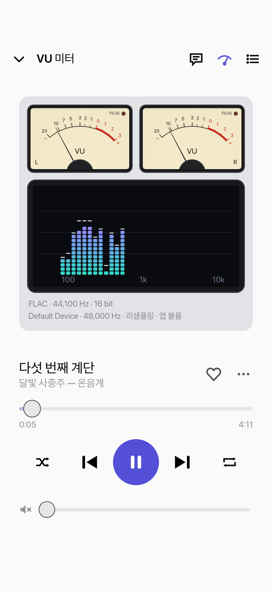

가지고 있는 음악을,
있는 그대로 듣습니다.
OnEum(온음)은 내 음악 파일을 위한 오프라인 플레이어입니다. 폴더를 추가하면 바로 재생하고, 파일은 읽기만 합니다. 계정도 서버도 없습니다.
- 형식
- FLAC, WAV, AIFF, ALAC, MP3, AAC, DSD
- 실행
- macOS, Windows, iPhone, Android
- 연결
- 없음. 인터넷 없이 씁니다
- 언어
- 한국어, 영어
- 라이선스
- MIT, 소스 공개

온음
on-eum
바꾸지 않은 온전한 소리라는 뜻이고, 음악에서 말하는 온음이기도 합니다.
하는 일
- 듣기
- 폴더를 추가하면 스캔이 끝나기 전에도 재생합니다. 곡과 곡 사이를 끊김 없이 잇고, 파일 하나로 된 앨범은 CUE 시트로 곡을 나눕니다. 대기열, 플레이리스트, 셔플과 반복, 잠자기 타이머가 있습니다.
- 찾기
- 5만 곡 라이브러리에서 검색과 스크롤이 바로 반응합니다. 초성만 넣어도 찾고,
artist:,year:1990-1999,plays:>=5같은 조건을 쓸 수 있습니다. 검색을 저장하면 스마트 플레이리스트가 됩니다. - 소리
- 파일에서 장치까지 거치는 단계를 신호 경로로 보여 줍니다. macOS에서는 곡의 샘플레이트에 장치를 맞춰 변환 없이 내보내거나 독점 출력을 고를 수 있습니다. 변환이 필요할 때는 20kHz까지 평탄하게 변환합니다.
- 보기
- 좌우 VU 미터와 36밴드 스펙트럼. 가사는 줄을 따라가고, 크레딧과 듣기 통계를 보여 줍니다. 파일 검사는 손상 여부와 다이내믹 레인지, 트루 피크를 잽니다.
- 다듬기
- 음량을 곡마다 비슷하게 맞춥니다. ReplayGain 태그를 쓰고, 태그가 없는 곡은 직접 잽니다. 10밴드 이퀄라이저, 헤드폰 34종의 보정 프로필, 크로스피드가 있습니다.
- 지키기
- 음악 파일과 태그를 바꾸지 않습니다. 광고가 없고 사용 기록을 어디에도 보내지 않습니다. 이 페이지도 외부 글꼴이나 추적 코드를 불러오지 않습니다.

휴대폰에서도 듣습니다
같은 코드로 만든 iPhone 앱과 Android 앱에는 손가락에 맞춘 화면이 따로 있습니다. 화면을 꺼도 재생이 이어지고, 잠금 화면과 이어폰 버튼으로 조작합니다.
iPhone에서는 음악을 파일 앱이나 Mac의 Finder로 넣거나, iCloud Drive와 꽂은 저장 장치의 폴더를 복사 없이 연결합니다. Android에서는 휴대폰의 Music 폴더와 추가한 폴더를 그 자리에서 읽습니다.
화면은 iPhone에서 찍은 것입니다. Android도 같은 화면을 씁니다.



확인한 범위
| 시스템 | 대상 | 지금까지 확인한 것 |
|---|---|---|
| macOS | Apple Silicon, macOS 14 이상 | macOS 27.2.1에서 확인했습니다. 아직 Apple의 서명과 공증을 받지 않아 처음 열 때 경고가 나옵니다. |
| Windows | 64비트, Windows 10 이상 | zip과 설치 프로그램을 만드는 것까지 확인했습니다. 실제 Windows에서의 확인은 아직 끝나지 않았습니다. |
| iPhone | iOS 16 이상 | iOS 시뮬레이터에서 확인했고, 실제 iPhone에 설치해 실행했습니다. App Store에는 없으며 Xcode로 직접 빌드해 설치합니다. |
| Android | Android 11 이상 | Android 16 에뮬레이터에서 확인했습니다. 실제 기기에서의 확인은 아직 하지 못했습니다. 스토어에는 없으며 직접 빌드해 설치합니다. |
무엇을 어떻게 확인했고 무엇이 남았는지는 저장소의 TESTING.md에 적어 둡니다.
받기
릴리스
배포 파일은 GitHub의 릴리스 페이지에 올립니다. macOS는 디스크 이미지, Windows는 설치 프로그램과 zip입니다. 아직 올라온 것이 없으면 소스에서 빌드해 주세요.
문서
소스에서 빌드
Rust와 Xcode 명령줄 도구가 있는 Mac에서 만듭니다.
git clone https://github.com/ywjung/oneum.git
cd oneum
scripts/package.sh # macOS 앱
scripts/package-windows.sh # Windows zip과 설치 프로그램
scripts/ios-sim.sh # iOS 시뮬레이터에서 실행
scripts/package-android.sh # Android 설치 파일(APK)자세한 준비물과 서명은 RELEASE.md에 있습니다.